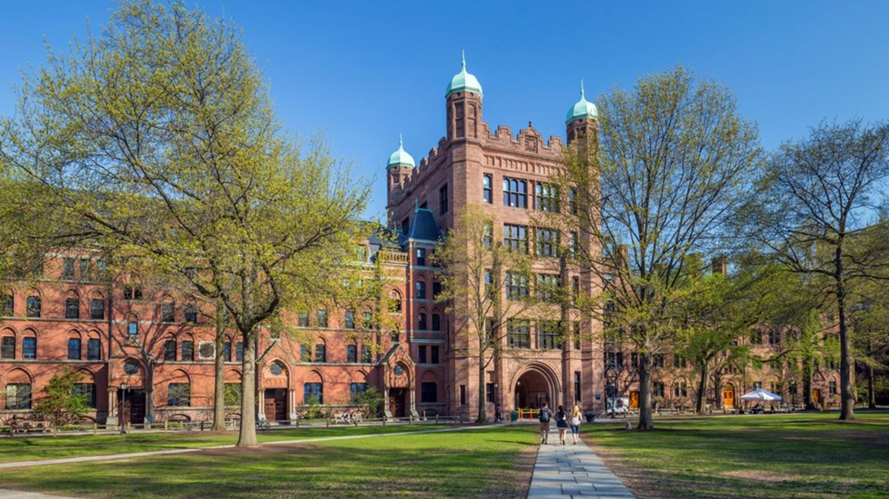

La Universidad San Agustín con sede Central en Mendoza, República Argentina fue fundada en el año 1954 con fines puramente educatitvos, dónde es esencial el desarrollo y la difusión de la cultura en todas sus formas a través de la enseñanza, la investigación científica, la preparación técnica, la formación profesional y la elevación del nivel ético y estético. Desde su creación orientó su actividad hacia el esclarecimiento de los grandes problemas humanos, con especial referencia a la vida nacional y regional. Las sedes de Cordoba y Buenos Aires, inauguradas en 1970 y 1974 respectivamente dieron una gran amplitud de progreso en las zonas y ofrecieron una oferta educativa mayor para la población y para el desarrollo regional.
